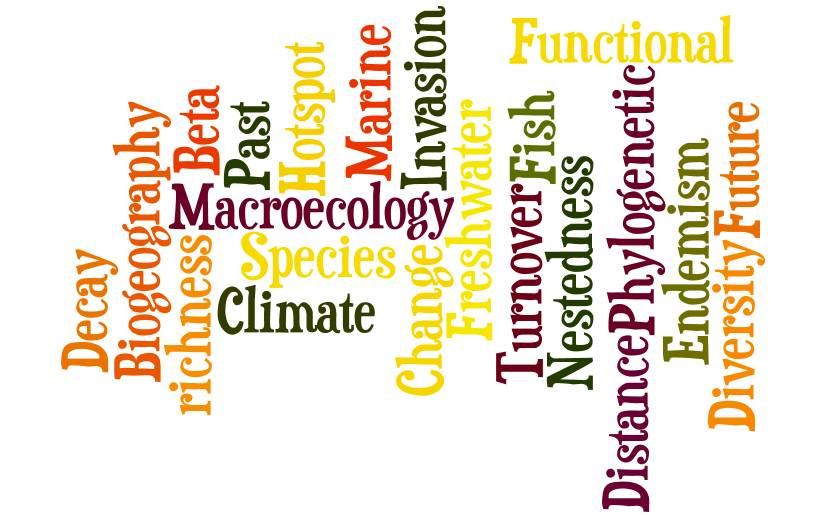

Full Professor · University of Montpellier
Fabien Leprieur
I am Full Professor at the University of Montpellier (France). My research focuses on both fundamental and applied topics:
- exploring large-scale biodiversity patterns in marine and freshwater ecosystems with a special emphasis on the role of historical and evolutionary processes;
- describing the patterns and exploring the mechanisms associated with changes in biodiversity from local to global scales, as a consequence of anthropogenic activities (e.g. species invasion, climate change, habitat loss).
- Associate Editor for Global Ecology and Biogeography (from 2015)
- Subject Editor for Ecography (from November 2023)
- Former junior member of the Institut Universitaire de France (2017–2022)
BiogeographyCommunity EcologyCoral reefsFishesFreshwater ecosystemsMacroecologyMacroevolutionMarine ecosystemsPaleoenvironmentPast Climate Change
Recent papers
- Bender, M.G., Quimbayo, J.P., Maxwell, M.F., Floeter, S.R., Leprieur, F. (2026) Reef fish community structure is shaped by biogeography and spatial scale Global Ecology and Biogeography, In press.
- Le Goff, R., Gaboriau, T., Pellissier, L., Albouy, C., Leprieur, F. (2026) Unravelling the roles of recent speciation and trait evolution in shaping the longitudinal gradient of tropical reef fish diversity. Journal of Biogeography, 53, e70184.
- Ruiz, E., Thémèze-Leroy, M., Ferraton, F., Panfili, J., Durand, J-D., Kulbicki, M., Silhol, J., Bernard, A., Thomas, R. Morisson, T., Djouldem, Y., Baptiste, E., Pascal, P-Y., Vanalderweireldt, L., Cordonnier, S., Chatagnon, A. Rault, P-L., Chareyre, P., Leon, L., Leone, I., Fouchan, Y., Manel, S., Boulanger, L., Victor, B., Albouy-Boyer, S., Thomas Le Berre, T., Dromard, C.R, Pellissier, L., Albouy, C., Leprieur, F. (2026) Global pelagic dispersal traits databases for early-life stages of marine fishes. Scientific Data, 13: 1291.
- Ruiz, E., Pascal, P.-Y., Cordonnier, S., Vanalderweireldt, L., Chatagnon, A., Rault, P.-L., Albouy, S., Silhol, J., Thomas, R., Dromard, C., Pellissier, L., Le Berre, T., Panfili, J., Albouy, C., Leprieur, F. (2025) In situ estimation of active dispersal abilities in reef fish early life stages using tracking technologies. Methods in Ecology and Evolution, 16, 744–759.
